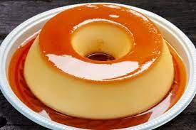

Receita de pudim
Ingredientes
Massa:
- 1 lata de leite condensado
- 1 lata de leite(medida da caixa do leite condensado)
- 3 ovos inteiros
Calda:
- 1 xicara de chá de açúcar
- ¹/² xicara de chá de agua
Modo de preparo
pudim:
- Primeiro bata bem os ovos no liquidificador
- Acrescente o Leite condensado e o leite, depois bata novamente
Calda:
- Acrescente o açucar e agua na panela até ficar moreno e deixe engrossar
- despeje a calda em uma forma redonda depois jogue a massa do pudim por cima
- Asse em forno médio por 45 minutos, com a assadeira redonda dentro de uma maior com água
- Espete um garfo para ver se está bem assado
- Deixe esfriar e desenforme
